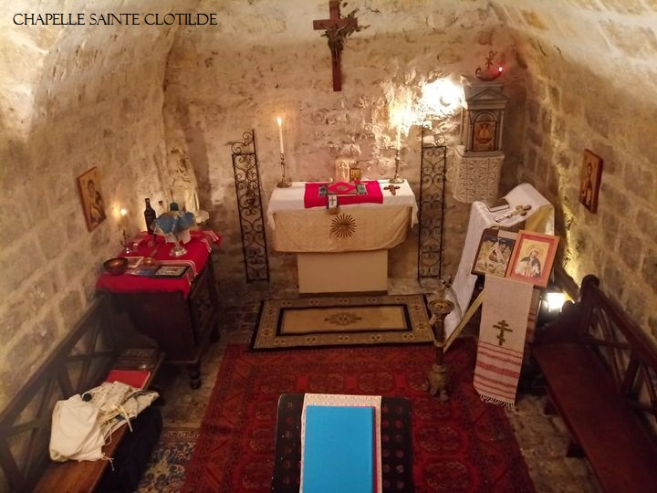

Catéchisme |
Nos Vidéos |
Les Livres Orthodoxes |
Qui sont les VCO? |
Boutique Orthodoxe |
Les Textes Patristiques |
Les Saints Conciles |

Bienvenue sur la page de la paroisse Orthodoxe missionnaire Sainte Clotilde. Les offices y sont célébrés en français. Elle dessert la ville de Paris. Vous pouvez nous retrouver sur You Tube, le nom de notre chaîne est Tradition Orthodoxe. Nous possedons également une page Facebook, qui s'appelle Paroisse Orthodoxe Ste-Clotilde. Si vous habitez vers la Bretagne, il y a une paroisse amie, qui dépend du même prêtre. Voici sa page Facebook : Paroisse orthodoxe saint Martin de Tours. N'hésitez pas à nous contacter si besoin. Vous pouvez le faire sur Facebook ou bien par email à cette adresse : tradition.orthodoxe@gmail.com
Notre paroisse s'appelle ainsi car nous avons beaucoup de vénération pour Sainte Clotilde. Elle était Reine des Francs et a converti son mari, notre Roy, Saint Clovis 1er. Ainsi, la France devenait Orthodoxe.
Sur cette page, vous pourrez trouver tout ce qui concerne l'enseignement chrétien authentique, préservé dans l'Eglise Orthodoxe.
Voici notre calendrier paroissial : Calendrier Paroissial
